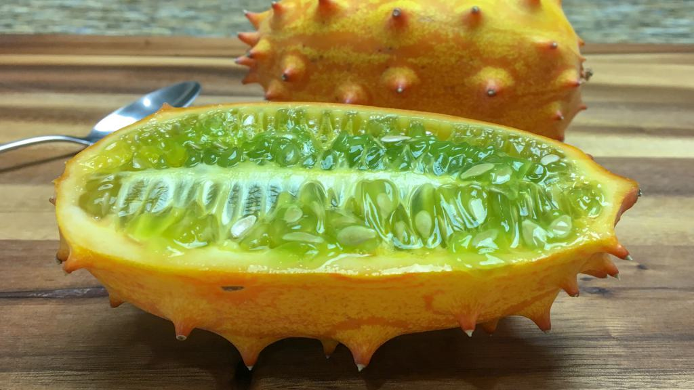

Melonen Club Viersen
Hier der Gewinner-Melone der letzten Saison

Martin Schaffner (51) hat es doch tatsächlich geschafft bei sich einige Hornmelonen wachsen zu lassen. Obwohl die Hornmelone (auch Horngurke) eigentlich eher im südlichen- und zentralen Afrika beheimatet ist, hat es Martin geschafft eine ungefähr 2 Meter große Pflanze heranzuziehen, an der 5 Früchte wuchsen. Martin beschreibt den Geschmack als süßlich. Als hätte man eine Geschackskombination aus Banane, Pfirsich und Zitrone. Damit hat er sich in diesem Jahr (2022) den ersten Platz verdient. Unsere Gratulation